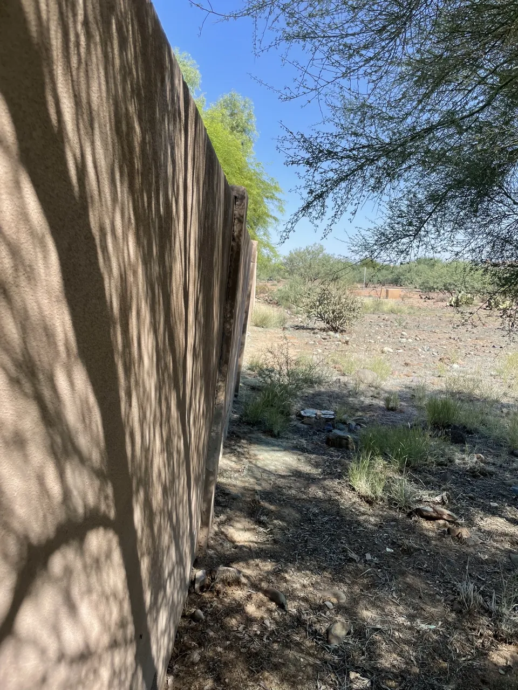
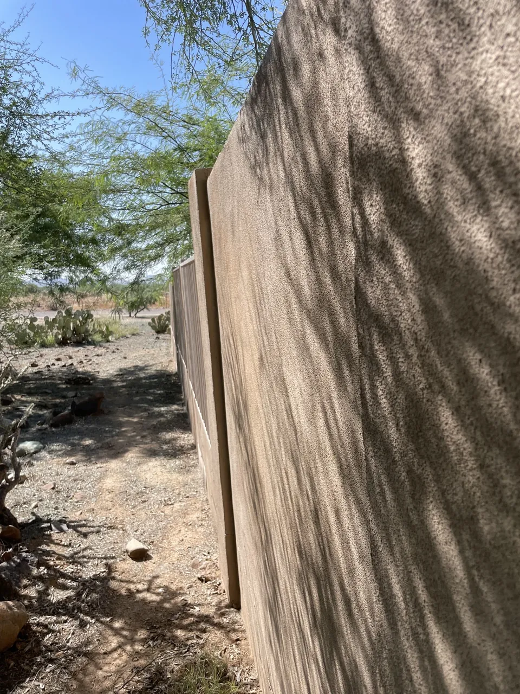

1
A wall that is visibly leaning, bowing, or moving out of plumb deserves more than a surface patch. We review the wall section, nearby pilasters, visible footing conditions, cracking, irrigation or erosion clues, and the condition of the adjoining wall before recommending repair, partial reconstruction, or rebuilding.
Text a wide photo, close-up, wall base and another angle showing any movement. Add your ZIP code.
Text photos to 623-226-0192 →A side-angle can reveal movement that is difficult to judge from a straight-on photo. This real Cave Creek example shows why we ask for several angles before recommending a repair scope.

Visible lean photographed along the wall line.

A closer angle documenting the relationship between wall panels and the adjacent vertical element.
Cave Creek service area →Desert Dreamco LLC provides this repair service throughout its Phoenix Valley service area. Choose your city below or text your ZIP code with photos to confirm availability.
Desert Dreamco LLC evaluates damaged sections and repairs or rebuilds CMU walls. ROC #334072.
See repair details →Repair, partial reconstruction and wall evaluation by Desert Dreamco LLC, ROC #334072.
See repair details →Desert Dreamco LLC repairs and rebuilds vehicle-damaged CMU walls across Phoenix Metro. ROC #334072.
See repair details →Desert Dreamco LLC removes damaged masonry and rebuilds affected CMU wall sections. ROC #334072.
See repair details →Desert Dreamco LLC repairs and reconstructs masonry columns across Phoenix Metro.
See repair details →Desert Dreamco LLC evaluates wall sections and rebuilds affected masonry where appropriate.
See repair details →Sometimes. If movement is localized and the surrounding wall remains suitable, a partial reconstruction may be possible. A severely unstable or broadly displaced wall may require a larger rebuild.
Send a straight-on photo, a side-angle that shows the lean, the wall base, nearby pilasters and any visible cracks.
No. If the wall appears unstable, avoid applying pressure to it. Photos and an on-site evaluation are safer ways to assess the condition.
Text photos and your ZIP code. We serve the Phoenix Valley through Desert Dreamco LLC, Arizona ROC #334072.